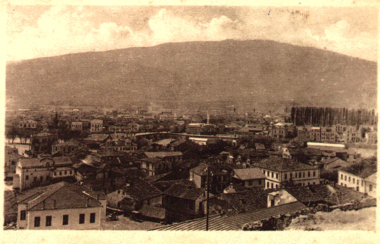
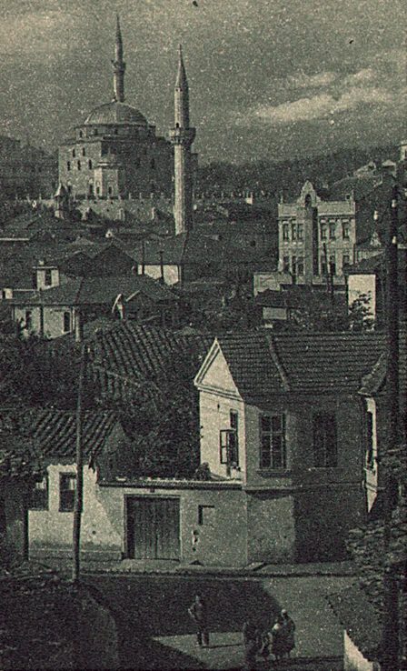
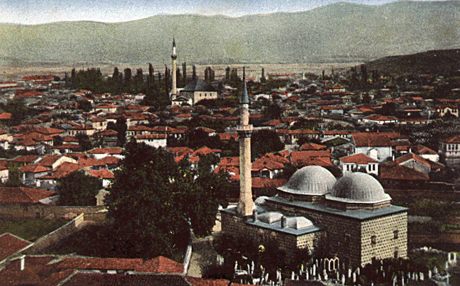

Скопие 1916 - 1917 панорама 2
Документи от Балканските войни
- Година
- 1916-1917
- Времетраене
- 00:12

Скопие към края на 19 век. Изглед към незастроените пространства на новата махала на десния бряг на Вардар. На заден план се вижда градската крепост - Кале. Вдясно е хълмът Гази Баба.

Края на 19 век. Незастроените пространства на десния бряг на река Вардар. Само малко къщи край самата река. На заден план се извисява скопската крепост - Кале.

Скопие през 1888 година, снимано от хълма Гази Баба към скопската крепост - Кале.

Изглед към града от Часовниковата кула към северната част на Скопие със старите турски и македонски махали. На заден план е хълмът Гази Баба. (края на 19 век)

Скопие - изглед към старата част със старата чаршия. На заден план се вижда Мустафа паша джамия, а вдясно от нея скопската крепост - Кале с казармите. На преден план се виждат жилищни сгради в махала Гази Баба - края на 19 век.

Скопие, началото на 20 век. Изглед от Часовниковата кула към стария обществен, търговски и занаятчийски център с чаршията. Нови архитектурни форми в старата градска структура. На заден план доминират Мустафа паша джамия и крепостта с казармите. Под нея е Паша Йигит бей джамия, най-старата джамия в Скопие (днес не съществува).

Изглед от скопската крепост - Кале към планината Водно. Точно под Калето е Еврейската махала. Виждат се Вардар и Каменният мост. Точно до него е Бурмали джамия
- началото на 20 век.

Изглед от скопската крепост - Кале към планината Водно. Точно под Калето е Еврейската махала. Виждат се Вардар и Каменният мост. Точно до него е Бурмали джамия
- началото на 20 век.

Изглед към Еврейската махала и града от скопската крепост - Кале. На преден план е синагогата (без покрив). Вдясно е Каменният мост - началото на 20 век.

Изглед от скопската крепост - Кале към Каменния мост и Бурмали джамия. На тази снимка е интересно да се забележи колко малко градът се е бил разпрострял на десния бряг на р. Вардар. Снимката е направена в края на 19 век. Далеч на заден план се вижда пивоварната, или както тогава я наричали „Бирарията“. На преден план е част от Еврейската махала.

Панорамен изглед от края на 19 век на централната градска зона. В средата е турският театър. На десния бряг на Вардар, точно до Каменния мост, се вижда Бурмали джамия.

Снимката е направена от стените на скопската крепост - Кале преди Първата световна война. В подножието са жилищни сгради от Еврейската махала, училището и синагогата. Вляво е църквата Св. Димитър.

Панорамна снимка, направена от скопската крепост - Кале в началото на 20 век. На преден план няколко войници от района на казармата. В подножието се виждат къщи от Еврейската махала и Пайко махала, после Каменният мост, а точно до него Бурмали джамия. По-нататък продължава новата част на Скопие, а в далечината се очертава пивоварната.

Изглед от скопската крепост - Кале към планините Водно и Китка. В средния план на снимката се вижда Каменният мост, а точно до него Бурмали джамия.

Скопие по време на Първата световна война. На снимката се вижда лагер на сръбската армия близо до църквата Св. Спас, чиято камбанария се вижда на заден план.

Панорама на Скопие - 1920-те. В подножието е Еврейската махала с училището и синагогата. Вижда се строежът на Народния театър.

Панорамна снимка на Скопие (около 1920). На тази снимка е интересно да се види планината Водно, по-точно нейната „голота“, за разлика от днес, когато е покрита с прекрасни гори. Залесяването е извършено след края на Втората световна война с организирани младежки акции. На преден план е Еврейската махала със синагогата и Еврейското училище.

Изглед към град Скопие от скопската крепост - Кале. На преден план е Еврейската махала със синагогата, училището и Народния театър. В лявата част на снимката се виждат Каменният мост и строящият се Офицерски дом - 1920-те.

Скопие, 1920-те. Изглед от скопската крепост - Кале към Еврейската махала.

Панорамна снимка на Скопие от Гази Баба към скопската крепост - Кале. (началото на 20 век)

Мустафа паша джамия на заден план, а под нея отчасти се вижда Паша Йигит бей джамия, която е била най-старата джамия в Скопие. (днес не съществува)

Изглед към Скопие от Гази Баба. На преден план е дребната застройка на жилищните махали. На заден план са Мустафа паша джамия и военните казарми в южната и северната част на крепостта - Кале.

Изглед към старата част на града на левия бряг на р. Вардар. На преден план са частни жилищни сгради. В средата е комплексът на старата скопска чаршия. На заден план доминира Мустафа паша джамия, а зад нея са градският затвор и казармите на Калето. Под Мустафа паша джамия е Паша Йигит бей джамия, най-старата джамия в Скопие (днес не съществува). (1920-те)

Панорама на старата градска структура, променена от процеса на европеизация и строежа на сгради с класически, еклектични и други стилови белези. Снимката е направена от Часовниковата кула към Мустафа паша джамия. Вдясно се вижда скопската крепост - Кале с казармите - 1920-те.

Чаир - стара част на града (днешна община Чаир). На преден план е Гази Иса бей джамия, а на заден план Яя паша джамия. - около 1920 година

Панорама на Скопие - левият бряг с квартал Чаир и част от Гази Баба. На преден план е Гази Иса бей джамия, а на заден план Яя паша джамия. (1920-те)

Часовниковата кула - построена 1566-72 г. На заден план са Гази Иса бей джамия и Яя паша джамия - 1920-те.

Панорама на старата част на града, към Гази Баба. Изглед от скопската крепост - Кале. Най-вдясно е Султан Мурад джамия, а вляво от нея Часовниковата кула. На същата линия вляво се вижда Гази Иса бей джамия - 1920-те.

Панорамен изглед на централната градска зона. - 1920-те.

Зимен пейзаж на централната част на града. На преден план са хаотично построени сгради, на чието място по-късно е построена Народната банка. Терасата на видимата част от сградата е лятно кино. Двата стълба в края държат екрана, а на празното място се редели столове за зрителите. Горе вляво се вижда скопската крепост - Кале. (1920-те)

Въздушна снимка на централната част на града (около 1928 г.). Доминират Офицерският дом, Каменният мост, Народният театър и Еврейската махала. Нагоре по течението на Вардар се вижда дървеният мост към Народния театър. Горе вдясно се вижда част от Калето. На преден план е част от квартал Ново махала. Снимката е направена през лятото, защото реката е силно отдръпната.

Въздушна снимка на централната част на града (около 1928 г.). Доминират Офицерският дом, Каменният мост, Народният театър и Еврейската махала. Нагоре по течението на Вардар се вижда дървеният мост към Народния театър. Горе вдясно се вижда част от Калето. На преден план е част от квартал Ново махала. Снимката е направена през лятото, защото реката е силно отдръпната.

Панорамна въздушна снимка на Скопие. Обхванат е предимно десният бряг на р. Вардар, където доминира Офицерският дом. Вдясно е Ристичевият дворец. Пред него е площадът, в центъра на който се вижда уредена зеленина. Забелязват се и файтони, за които площадът бил главната стоянка за превоз на граждани. Двата бряга са свързани от Каменния мост. Долу вдясно се вижда Народният театър - прекрасна сграда, за която тъгуват много стари скопяни.

Панорамна снимка на лявата част на града с Каменния мост и махалите: вляво - Еврейската махала, вдясно - Пайко махала. Вдясно от моста е паметникът на падналите в Балканските войни пред Османската банка. На заден план се виждат части от джамии и Часовниковата кула, както и кварталите Чаир и Гази Баба. (1920-те)

Панорамна снимка на Скопие, по-точно на левия кей на р. Вардар с част от Еврейската махала, Пайко махала и Каменния мост. (1920-те)

Изглед към Каменния мост от кулата на Офицерския дом. Точно до моста вдясно се намирал кабинетът на зъболекаря д-р Рубен. Малко по-вдясно е сградата на Османската банка. Между тях имало малко площадче със стоянка за файтони. А в средата на площадчето бил паметникът на падналите борци - около 1927 година.

Изглед към Каменния мост от кулата на Офицерския дом. Точно до моста вдясно се намирали кабинетът на зъболекаря д-р Рубен и Земеделската банка. Вдясно е сградата на Османската банка. Между тях имало малко площадче със стоянка за файтони. А в средата на площадчето бил паметникът на падналите в Балканските войни - около 1927 година.

Изглед към Каменния мост от кулата на Офицерския дом. Точно до моста вдясно се намирал кабинетът на зъболекаря д-р Рубен. Малко по-вдясно е сградата на Османската банка. Между тях имало малко площадче със стоянка за файтони. А в средата на площадчето бил паметникът на падналите борци - около 1927 година.

Изглед към Каменния мост на р. Вардар и част от левия бряг, т.е. към Пайко махала, сниман от кулата на Офицерския дом. Точно до моста вдясно се намирал кабинетът на зъболекаря д-р Рубенс. Вдясно е сградата на Османската банка. Между тях имало малко площадче със стоянка за файтони. А в средата на площадчето бил паметникът на падналите в Балканските войни - около 1927 година.

Панорамна снимка - изглед към Каменния мост със скопската крепост - Кале на заден план и Еврейската махала - 1920-те.
.

Скопие след 1930 г. Вляво е Народната банка, а вдясно Офицерският дом. На преден план е част от минарето на Ибни Пайко джамия и сградата на зъболекаря д-р Рубен. На малкия площад имало фурна с най-вкусните симити в Скопие и стоянка за файтони за превоз на граждани.

Изглед към Вардар със скопската крепост - Кале, а вдясно се очертава градът. Виждат се Офицерският дом и Народната банка. - 1930-те

Прекрасна снимка на града и течението на р. Вардар. Вляво е скопската крепост - Кале. В центъра се виждат Офицерският дом и Народната банка. Вдясно е планината Водно, а в далечината очертанията на планината Китка. - 1930-те

Прекрасна гледка към течението на Вардар с планината Водно и квартал Буняковец. Виждат се Офицерският дом и Народната банка. (1930-те)

Изглед към квартал Буняковец - 1930-те, с част от градския парк в дясната част на снимката.

Част от новопостроения квартал Буняковец през 1920-те. Виждат се двуетажни сгради със скромна архитектура.

Изглед към квартал Буняковец, 1930-те.

Изглед към квартал Буняковец, който днес се намира в централната градска зона. Вижда се редица от планово построени жилищни сгради според градоустройственото решение за квартала.

Прекрасен панорамен зимен пейзаж. Снимката е направена от скопската крепост - Кале към планината Водно. В дясната средна част се виждат Офицерският дом и Стопанско-търговската камара.

Изглед към Каменния мост на р. Вардар. От другата страна на реката: вляво - Народната банка, вдясно - Офицерският дом.

Панорама на Скопие - снимана от скопската крепост - Кале. Доминират две сгради: вдясно Офицерският дом, а вляво Народната банка. На преден план е Еврейската махала. (1930-те)

Въздушна снимка на централната част на града. Обхванати са площадът с Офицерския дом и Народната банка. По-нагоре се виждат Народният театър и дървеното мостче.

Въздушна снимка на града. Обхванати са площадът с Офицерския дом, Народната банка, Стопанската камара, махалите - Еврейската и Пайко махала - и Каменният мост. Горе вляво се вижда цялата градска крепост - Кале с казармата. До нея е Мустафа паша джамия, а на заден план се очертава Яя паша джамия.

Въздушна снимка на катедралната църква Св. Богородица в Скопие, издигната през 1835 година (в центъра, с висока камбанария), и църквата Св. Мина от 1902 година (вляво, с две камбанарии). Наоколо е Пайко махала.

Скопие, 1930-те. Старата част на града. Изглед през прозорец с железни решетки на стара турска сграда.

Панорама на града. Най-вляво е Султан Мурад джамия, а вдясно от нея Часовниковата кула. Най-вдясно е Гази Иса бей джамия. На заден план се виждат Народната банка и Офицерският дом, а зад тях се издига планината Водно. (1930-те)

Панорама на града. На заден план е Султан Мурад джамия, а вдясно от нея Часовниковата кула. Най-вдясно е Гази Иса бей джамия. На заден план се виждат Народната банка и Офицерският дом. (1930-те)

Въздушна снимка на града. В долната част се виждат Каменният мост и Офицерският дом. Нагоре по течението е дървеното мостче, водещо към Народния театър и Еврейската махала. В горната част е скопската крепост - Кале с казармата. Снимано на 26 юни 1933 г. в 10 часа сутринта.

Празно незастроено пространство пред днешния Музей на град Скопие. Вляво се виждат хотелите „Бристол“ и „Сръбски крал“ на главната улица, която води към площада. На същата улица, в центъра на снимката, се вижда дворецът Кранг. (1930-те)

Въздушна снимка на площада. На преден план е Народната банка откъм задната страна, а вдясно от нея Стопанско-търговската камара. Срещу Народната банка се намира Офицерският дом. Вдясно се виждат Вардар и част от Каменния мост. Нагоре по течението се вижда дървеният мост към Народния театър, който също се вижда в горния десен ъгъл на снимката.

Документи от Балканските войни
 Акведукт4 картички
Акведукт4 картички Кале30 картички
Кале30 картички Мостове60 картички
Мостове60 картички Кей58 картички
Кей58 картички Площад46 картички
Площад46 картички Сгради66 картички
Сгради66 картички Християнски храмове19 картички
Християнски храмове19 картички Мюсюлмански сгради33 картички
Мюсюлмански сгради33 картички Офицерски дом29 картички
Офицерски дом29 картички Театър28 картички
Театър28 картички Железопътна гара13 картички
Железопътна гара13 картички Училища36 картички
Училища36 картички Паркове12 картички
Паркове12 картички Пазари18 картички
Пазари18 картички Улици38 картички
Улици38 картички Панорама I60 картички
Панорама I60 картички Панорама II30 картички
Панорама II30 картички Колажи55 картички
Колажи55 картички Наводнения9 картички
Наводнения9 картички Земетресение27 картички
Земетресение27 картички Скопие 200026 картички
Скопие 200026 картички